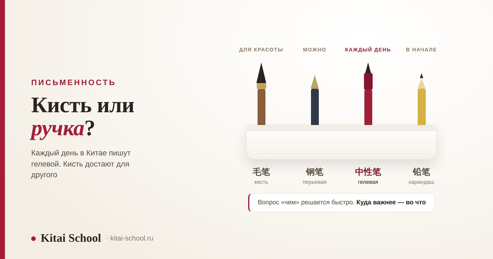
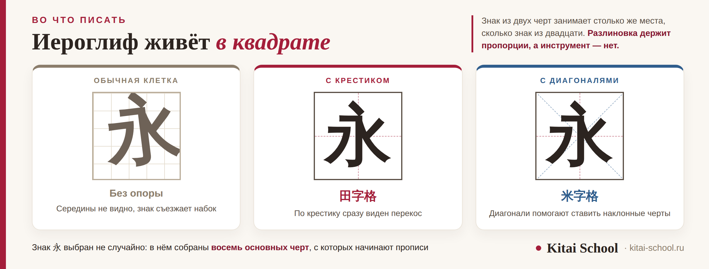

Письменность
Чем писать китайские иероглифы: ручка, кисть и тетрадь, которая важнее инструмента


Вопрос «чем писать иероглифы» обычно задают, представляя кисть и тушь. Ответ проще и скучнее: каждый день в Китае пишут обычной ручкой, чаще всего гелевой. А кисть достают для другого — это отдельное занятие. И есть вещь, которая на самом деле важнее любого инструмента: тетрадь, в которой вы пишете.
Для учёбы нужна гелевая ручка — ровная линия, никакого нажима. Кисть — это каллиграфия, отдельное дело со своей техникой, и учить знаки ею медленнее. «Четыре сокровища» — кисть, тушь, бумага и тушечница — красивая старая формула, но в быту её не используют. И главное: иероглиф пишется в квадрате, поэтому китайская тетрадь расчерчена квадратами с крестиком внутри. В обычной клетке знаки разъезжаются.
Чем пишут каждый день
Если зайти в китайский магазин канцтоваров, полки будут заняты гелевыми ручками. Ими пишут школьники, студенты и взрослые. Кисть там тоже есть, но лежит в другом отделе — рядом с тушью и бумагой для каллиграфии.
| Чем | Для чего годится |
|---|---|
| Гелевая ручка 中性笔 | учёба и повседневное письмо: ровная линия, нажим не нужен |
| Перьевая ручка 钢笔 | тоже подходит, но линия зависит от нажима — новичку сложнее |
| Карандаш 铅笔 | первые недели и дети: можно стереть и переписать |
| Шариковая ручка 圆珠笔 | пишет, но линия неровная, и тонкие черты сливаются |
| Кисть 毛笔 | каллиграфия, а не изучение языка |
Разница между гелевой и шариковой ручкой кажется мелочью, но она видна на деле. В иероглифе много коротких черт, и они стоят близко друг к другу. Шариковая ручка кладёт линию неровно, и там, где черты сходятся, получается пятно — вы потом сами не разберёте, что написали. Особенно это мешает в знаках, которые отличаются одной чертой: такие пары разобраны в статье про курсы по иероглифике.
Тетрадь важнее ручки
Вот то, о чём почти не говорят, а зря. Иероглиф пишется в квадрате. Сколько бы частей в нём ни было — две, три, пять, — все они должны уместиться внутри одного квадрата, и знак из двух черт занимает столько же места, сколько знак из двадцати.
Отсюда и китайская тетрадь. Она расчерчена не в линейку и не в обычную клетку, а на квадраты, и внутри каждого квадрата стоит бледный крестик. Называется такая клетка 田字格 — по знаку 田 «поле», который выглядит ровно так же.
Крестик показывает середину. По нему сразу видно, стоит знак ровно или заваливается набок, одинаковые ли у него половинки, не вылезла ли черта за край. Без этой опоры знаки начинают разъезжаться, и человек этого не замечает, пока не сравнит с образцом.

Есть и второй вид клетки — 米字格, квадрат с крестиком и двумя диагоналями, как знак 米 «рис». Диагонали помогают поставить наклонные черты. Такая разлиновка нужна не всем: с ней удобно ставить руку в первые месяцы, дальше хватает обычной 田字格. Кстати, у знаков препинания в китайском своя клетка, и правило там похожее — об этом отдельно в статье про курс по пунктуации китайского языка.
Кисть, тушь и четыре сокровища
Теперь про то, ради чего этот вопрос обычно и задают. Набор для письма кистью называют 文房四宝 — «четыре сокровища кабинета учёного». Их правда четыре.
| Что | Чтение | Что это |
|---|---|---|
| 笔 | bǐ | кисть: пучок волоса на бамбуковой ручке |
| 墨 | mò | тушь; раньше это была твёрдая палочка, её растирали |
| 纸 | zhǐ | бумага; для каллиграфии — тонкая 宣纸 |
| 砚 | yàn | тушечница: камень с углублением, где тушь разводят водой |
Слово «сокровища» тут не для красоты: хорошая тушечница или старая кисть действительно стоили дорого, и их держали как ценность. Но выражение книжное, и сегодня оно живёт в разговорах о культуре и на коробках сувенирных наборов, а не в школьном пенале.
Первый набор для каллиграфии мне подарили на втором курсе: кисть, тушечница, палочка туши. Я решила, что теперь буду учить знаки как надо — по-настоящему, кистью.
Хватило меня на неделю. Я растирала тушь, пристраивалась к нажиму, следила, чтобы кисть не набрала лишнего, — и за вечер успевала написать знаков пять. Ручкой я за то же время проходила весь новый список.
Набор я не выбросила. Просто развела эти два занятия: знаки учу ручкой, а кисть достаю, когда хочется именно писать красиво и никуда не спешить. С тех пор оба дела идут лучше.
И то, о чём редко говорят прямо. Кисть требует своей техники: нажима, наклона, количества туши на волосе. Пока вы с этим разбираетесь, вы занимаетесь каллиграфией — хорошим и красивым делом, но не запоминанием знаков. Если цель — выучить язык, берите ручку. Если хочется кисти, занимайтесь ею отдельно и без задачи «заодно выучить».
Что купить, чтобы начать
Список короткий, и дорогого в нём ничего нет.
| Что | Зачем |
|---|---|
| Гелевая ручка | основной инструмент, ничего другого для учёбы не нужно |
| Тетрадь с клеткой 田字格 | держит пропорции знака; заменить обычной клеткой не выйдет |
| Прописи 字帖 | бледные образцы, которые обводят; полезны в начале |
| Ткань для письма водой 水写布 | линия проступает и через несколько минут исчезает — можно писать снова |
Про 水写布 стоит сказать отдельно, потому что штука неочевидная. Это плотная ткань, по которой пишут кистью, смоченной обычной водой: линия темнеет, держится пару минут и пропадает, когда вода испарится. Ни туши, ни бумаги не нужно, и ошибаться не жалко. Для знакомства с кистью это самый спокойный способ.
И последнее, одной строкой. Порядок, в котором вы ведёте черты, важен не меньше инструмента, и он не про красоту: от него зависят пропорции и то, узнает ли знак рукописный ввод на телефоне. Мы разобрали это подробно в статье про курсы по иероглифике и не повторяем здесь.
Частые вопросы (FAQ)
Чем китайцы пишут иероглифы в обычной жизни?
Обычной ручкой, чаще всего гелевой: она даёт ровную линию и не требует нажима. Кисть и тушь в повседневной жизни никто не достаёт — это инструмент каллиграфии, отдельного занятия со своими правилами. Примерно как у нас перьевая ручка и красивый почерк: уметь приятно, но счета и списки покупок пишут не этим.
Можно ли учить иероглифы кистью?
Можно, но это будут два разных дела одновременно, и оба пойдут медленнее. Кисть требует своей техники: нажим, наклон, количество туши. Пока вы с ней разбираетесь, вы занимаетесь каллиграфией, а не запоминанием знаков. Если цель — выучить язык, берите ручку. Если хочется каллиграфии, занимайтесь ею отдельно и в удовольствие.
Что такое «четыре сокровища кабинета учёного»?
Так называют набор из четырёх вещей для письма кистью: 笔 кисть, 墨 тушь, 纸 бумага и 砚 тушечница, в которой тушь растирают с водой. По-китайски это 文房四宝. Выражение старое и книжное, и сегодня оно живёт скорее в разговорах о культуре и в названиях сувенирных наборов, чем в быту.
Почему китайские тетради расчерчены квадратами?
Потому что иероглиф пишется в квадрате: все его части должны уместиться внутри и не вылезти за края. Клетка 田字格 — это квадрат, разделённый крестиком на четыре части, и крестик показывает середину. По нему видно, стоит знак ровно или заваливается набок. В обычной тетради в клетку такой опоры нет, и знаки быстро начинают разъезжаться.
Нужно ли вообще писать от руки, если всё набирают на телефоне?
Набирать вы и правда будете чаще, чем писать. Но рука помогает запоминать: когда вы выводите знак сами, вы замечаете, из чего он собран, и перестаёте путать похожие. Это не значит, что надо исписывать тетради строчками одного знака — достаточно писать новые знаки по нескольку раз и возвращаться к ним. Зачем нужен правильный порядок черт, разобрано отдельно в статье про курсы по иероглифике.
Что купить, чтобы начать писать иероглифы?
Гелевую ручку, тетрадь с квадратами 田字格 и, если хочется, прописи 字帖 — тетрадь с бледными образцами, которые обводят. Этого достаточно надолго. Отдельно стоит упомянуть 水写布 — ткань, на которой пишут водой: линия проступает и через несколько минут исчезает, ткань можно использовать снова. Для кисти нужен свой набор, но он нужен не для изучения языка.
Хотите писать знаки так, чтобы они не разъезжались, и понимать, из чего они собраны? На диагностическом занятии посмотрим, как вы пишете сейчас, и покажем, с чего начать. Оставить заявку или написать в Telegram.
Дальше по теме: как устроен знак и как его разбирать — курсы по иероглифике; ключи и что они подсказывают — значение ключей в китайских иероглифах; откуда взялись формы знаков — курс по этимологии китайского языка; есть ли в китайском алфавит — в Китае буквы или иероглифы; с чего начать — изучение китайского языка с нуля; знаки препинания и их клетка — курс по пунктуации китайского языка; сколько знаков нужно — сколько иероглифов нужно знать; ребёнку — китайский язык для детей и китайский для малышей; удивительное про письменность — интересные факты о китайском языке; разборы отдельных знаков — иероглиф «рыба» и вода по-китайски.
Источники
- Практика Kitai School — постановка руки у взрослых и детей, работа с прописями и разбор типичных ошибок в начертании.
- Китайская школьная традиция письма: тетради с разлиновкой 田字格 и 米字格, прописи 字帖.
- Набор для письма кистью 文房四宝 — кисть, тушь, бумага и тушечница; состав набора и назначение каждого предмета.
Пусть рука слушается! 笔下生花！